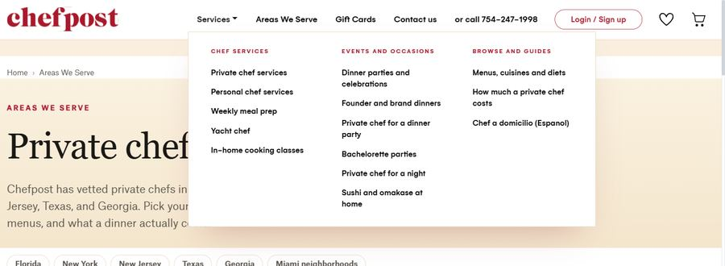
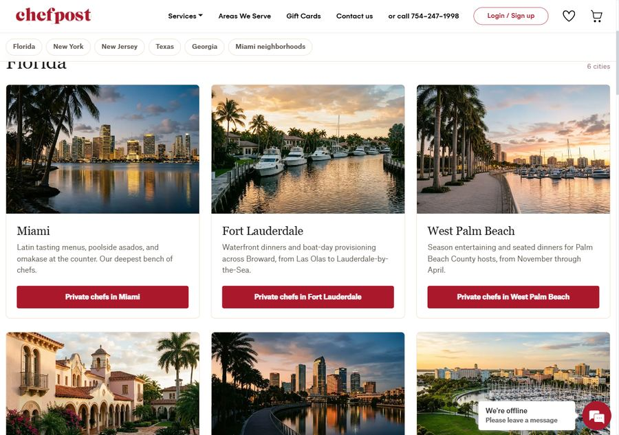
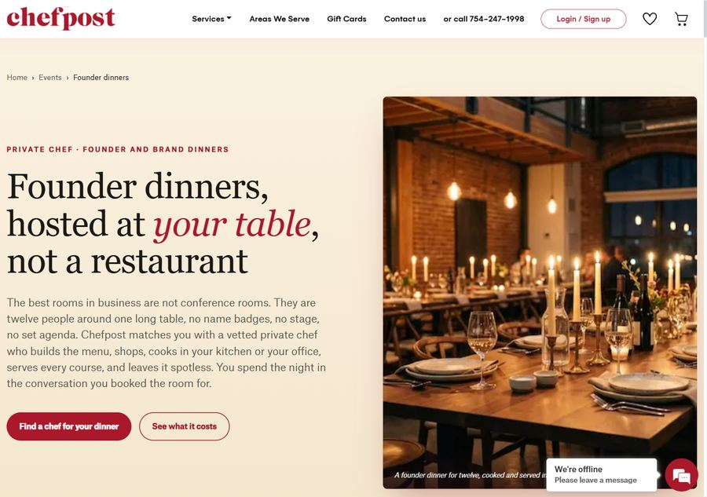
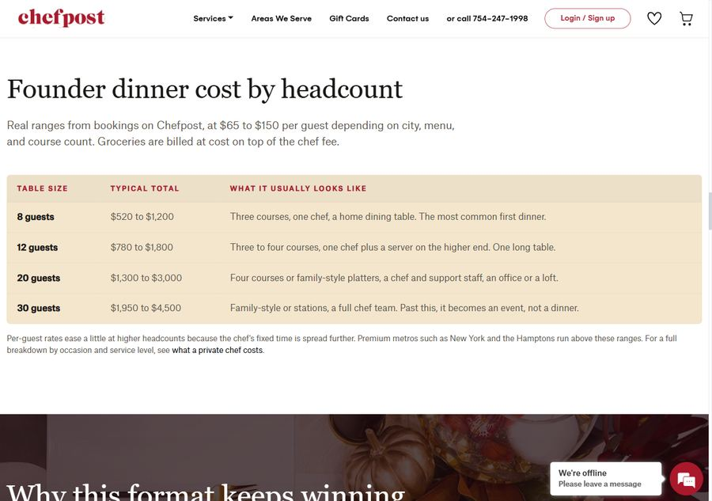
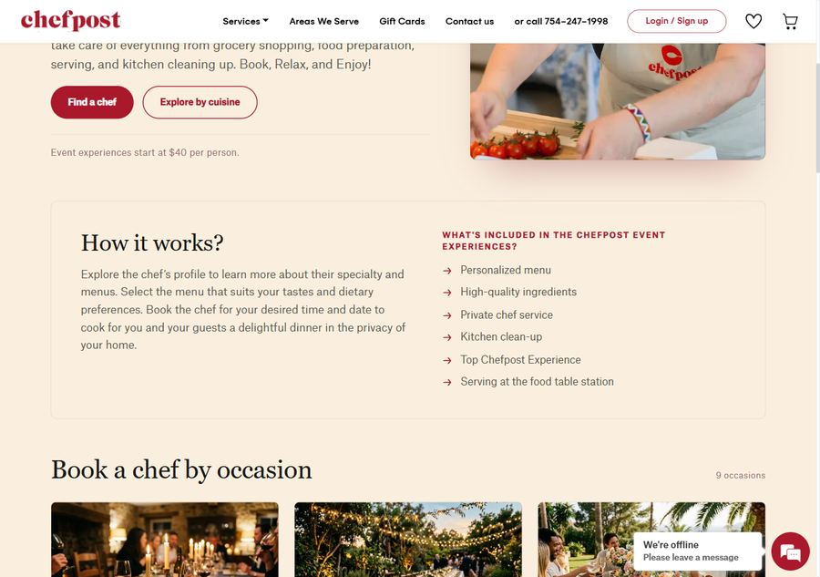

An inventory of everything shipped on chefpost.com, in plain terms. Grouped by what a visitor sees first, what we added, what got faster, and the things that were broken where nobody could see them.
Both of these are about the same problem: Chefpost offered a lot, and almost none of it was reachable unless you already knew it existed.
Rebuilt into three labelled groups, so people browse by what they actually need rather than scanning one long list. Chef services for the recurring stuff, Events and occasions for a specific night, and Browse and guides for someone still deciding. Fourteen destinations, every link checked.
Why it matters: a visitor who came for a birthday dinner now discovers weekly meal prep, cooking classes and yacht service without hunting. It turns one visit into several possible bookings.

Was a wall of text links doing three jobs at once. Now it does one job, answers one question, and answers it visually: eighteen cities as photo cards, each with its own photograph of the real place, a line about what people book there, and a single clear button. A sticky bar across the top jumps you to Florida, New York, New Jersey, Texas, Georgia or the Miami neighborhoods.
Why it matters: the page is over 6,000 pixels tall. Without the jump bar, reaching Texas meant scrolling past everything. Now it is two clicks from anywhere. The photographs were generated for us rather than taken from the web, so there is no third-party image rights to clear on any of them.

Each one exists because a real search, or a real customer question, had nowhere to land.
A new page for founder dinners, brand dinners, client appreciation dinners, networking dinners, influencer and creator dinners, team dinners, supper clubs and community dinners. Each format named explicitly, with its own guest count and budget, plus a cost table by table size from 8 to 30 guests and a full hosting guide.
Why it matters: this is a category nobody owns yet. The page is written to be the one AI assistants quote when someone asks how to host one of these, which is already how Chefpost gets found for pricing questions.


The first state-level page on the site, with the four New Jersey city pages linked underneath it.
Why it matters: people searching for a chef in New Jersey had nowhere to land. The address people actually type, chefpost.com/private-chef-nj, returned a "page not found". It now goes to the right place, and the four city pages that never once said "NJ" now do.
Rewritten to speak to people looking to hire a chef for weekly cooking, rather than to a general audience. Proper headline, full page structure, real description.
Why it matters: meal prep is recurring revenue, not a one-night booking. It is the highest-value thing on the site to be found for, and the page was two words long at the top.
A page each for eighteen cities, twelve Miami neighborhoods from Brickell to Key Biscayne, plus a Spanish page for chef a domicilio. Every one of them is below, and every one opens.
Why it matters: people search by their city, not by "private chef". Each page carries local menus, local pricing and the chefs who actually cover that area.
Private chef services, personal chef services, yacht chef, in-home cooking classes, sushi and omakase at home, and an expanded cost guide.
Why it matters: the cost guide is the single most-cited Chefpost page in AI answers. Every recorded citation is someone asking what a private chef costs.
The events page rebuilt around thirteen occasion cards instead of a short block of text.
Why it matters: it was 255 words with no headline at all. It is now the hub that connects every occasion page.
Redesigned with an editorial layout, real photography, a trust band, and real chefs featured by name.
Why it matters: hiring someone to cook in your home is a trust decision. This is the page where that gets decided.

It was, and the cause was measurable. Here is what changed.
Areas We Serve went from 12.9 seconds to 0.7. The Miami page went from 9.5 seconds to 0.55.
Why it matters: photos were being re-downloaded and re-processed on every single visit. Now they are kept, so anyone who comes back, or moves between pages, gets the site instantly.
From 76.6 MB down to 35.6 MB, with no visible loss of quality.
Why it matters: weight is what people feel on a phone away from wifi, which is where most bookings start.
From 1,054 KB down to 58 KB.
Why it matters: the page was carrying an enormous hidden payload before showing a single word.
Every one of 139 photographs got a tiny blurred preview that appears instantly while the real image loads.
Why it matters: before this, a slow connection showed a bright empty block that read as a broken page rather than a loading one.
Moving from one page to another now shows a thin loading bar at the top.
Why it matters: without feedback, people click twice, or assume nothing happened and leave.
Every landing page aligned to the same layout, spacing, typography and colour, using the real Chefpost photo library.
Why it matters: pages built at different times looked like different companies. Now the site reads as one brand wherever someone lands.
Found and replaced photographs that repeated across pages, and images that did not match the topic of the card they sat on.
Why it matters: a seafood photo on a barbecue card is the kind of detail that quietly costs trust.
A full responsive sweep across phone, tablet and desktop sizes.
Why it matters: it turned up two pages that scrolled sideways on a phone, both broken before any of our work. Careers and the privacy policy. Both fixed.
None of these change how the site looks. All of them changed how it performs.
The menu was only built when a visitor clicked it. Search engines do not click. So for as long as it existed, the menu showed zero links to Google. It now shows fourteen, from every page on the site.
Why it matters: this is the single highest-value line in this report and it was one line of code. Every service page went from invisible to linked from everywhere.
The meal prep page carried an instruction telling search engines its real address was a slightly different one, which pointed back again. Fixed.
The yacht services page was 63 words of placeholder with no headline, publicly listed. Retired and pointed at the real yacht chef page.
Google was sending people to the raw filter tool instead of the Miami or cost pages. Corrected.
The filter, FAQ and contact pages had none. Added, and the home page headline rewritten to lead with what Chefpost actually does.
A 2023 article and the Miami landing page were splitting the same audience. Merged into one.
The site was recording zero completed bookings in analytics, so nothing about revenue was measurable. Purchase, checkout and add-to-cart are now defined and firing.
Why it matters: partially solved. Completed bookings register, but without their value attached, so we can count them and not yet total them. Finishing it needs access to the tag manager.
Everything below comes straight from Google Search Console and Google Analytics. The comparison is the last 28 days of data against the 28 before it, and against the same window a year ago. August is not finished, so where we project the full month we say so.
| Month | Clicks | Times shown | Click-through rate |
|---|---|---|---|
| March | 287 | 24,197 | 1.19% |
| April | 242 | 33,782 | 0.72% |
| May | 215 | 36,366 | 0.59% |
| June | 194 | 21,069 | 0.92% |
| July | 205 | 20,498 | 1.00% |
| August, first 23 days | 234 | 15,516 | 1.51% |
The interesting column is the last one, and it is the best of these six months. August is being shown to fewer people than May and converting more than twice the share of them. That is the difference between being found by anyone and being found by the right people. Fewer, better-qualified appearances is the goal, not a bigger impression count.
Clicks to the city landing pages went from 3 to 32, and the number of times they were shown went from 718 to 2,682.
Why it matters: these pages were built and then sat quiet for weeks, which is normal. This is the month they started working.
The Miami page went from 0 clicks to 10, and from 183 appearances to 1,002.
Why it matters: an old article had been competing with it for the same audience. Merging them is what freed it.
From 598 appearances to 1,401, and its average position improved from 24th to 20th. It now shows up for 111 different meal prep searches, up from 69.
Why it matters: this page was rewritten eight days before the end of this window. It is early, and it is already moving.
Pages viewed per visit went from 3.00 to 3.33, and the share of people who leave immediately dropped from 52% to 46%.
Why it matters: this is the navigation and speed work showing up in behaviour rather than in a chart.